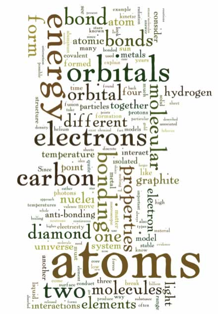
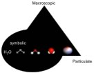

– knowledge statements and learning goals

| Chapter 3: Elements, bonding and physical properties – knowledge statements and learning goals |
|
From the molecular to the macroscopic: When atoms interact with one another to form molecules or larger structures, the molecules have different properties than their component atoms - they display what are often referred to as “emergent” properties, where the whole is more than (or different from) the sum of its parts. |
 |
The answer is not completely simple (as you are probably
slowly coming to expect): as we add more and more atoms/molecules
together, their properties change, but not all at once. You have
probably heard about nanoscience and nanotechnologies; they have
been the focus of a great deal of research and economic interest
in the past decade or so. Nanoparticles are generally classified
as being between 1 to 100 nm in diameter (a nanometer is one billionth
of a meter or 1 x 10-9 m); they often have properties that are different from those of bulk
(macroscopic) materials. Nanomaterials can be thought of as a bridge
between the atomic/molecular and macroscopic. Assuming that they are pure, macroscopic materials have predictable
properties and it doesn’t really matter where you obtain the material. |
| A macroscopic sample of pure gold behaves the same regardless of which store you buy it from, and Archimedes (ca. 287-ca. 212 BCE) could, if he were still alive, tell you whether it was pure or not based on its properties, for example: its density. But gold nanoparticles have different properties depending upon their exact size - when suspended in water, they produce colors ranging from orange to purple, depending on their diameter. |
Often the differences in the properties displayed are due to differences in the ratio of surface area to volume, which implies that inter- (between) molecular forces are more important for nanomaterials. As we cluster more and more particles together, the properties of the particles change. Biomolecules generally fall into the size range of nanomaterials, and as we will see their surface properties are very important in determining their behavior. |
|  |
Unfortunately when we are talking about the properties of atoms and molecules versus substances and compounds, it is can be difficult, even for experienced chemists, to keep the differences explicit. In addition,different representations are often used for different organizational levels; it is an important skill to be able to recognize and translate between levels. We will be using a range of representations to picture atoms and molecules; chemists (and we) typically use various shorthand methods and “chemical equations” to represent molecular composition, shape, and behaviors. |
We will be trying to help you get these broader pictures, which should help make the diagrams and equations used here make sense. That said, it is always important to try and explicitly identify what you are assuming when you approach a particular chemical system, that way you can go back and check whether your assumptions are correct. Where do atoms come from? “Sometimes I’ve believed as many as six impossible things before breakfast” - Alice in Wonderland, Lewis Carroll. Did you ever stop to ask yourself where the atoms in your body came from? Common answers might be food, water, air, but these are not the “ultimate” answers, since we then need to ask, “where did those atoms come from?” Where did the atoms in the Earth come from? There are really two general possibilities: either that the atoms that make up the Earth (and the rest of the universe) are eternal or that they were generated/created by some process. How do we decide which is which? What is the evidence favoring one model over the other? The answers come not from chemistry, but from astrophysics. Since we are thinking scientifically, what kinds of evidence can we look for to decide whether atoms (or the Universe) are eternal or recently created? Clearly, the evidence must be observable in the here and now, and can be used to formulate logical ideas that make clear and unambiguous predictions. As we will see, we will be called upon once again to believe many apparently unbelievable things. The current organizing theory in astrophysics and cosmology, known as the Big Bang Theory, holds that the universe is approximately 13,730,000,000 ± 120,000,000 years ago years old (an unimaginable time) and that the sun and earth are approximately 5,000,000,000 years old, while the universe as a whole is approximately 156 billion light-years in diameter. The Big Bang Theory was put forward in a response to the observation that galaxies in the universe appear to be moving away from one another. Since the galaxies that are further away from us are moving more rapidly away than those that are closer, it appears that space itself is expanding (now there is a seriously weird idea). Based on this observation, we can carry out a “thought experiment”. What happens if we run time backwards? Taken to its logical conclusion, the universe would shrink until, at some point, all of the universe would be in a single place, a single point – which would be unimaginably dense. Based on a range of astronomical measurements, this “singularity” existed approximately 13.73 x 109 years ago – that is: the universe is about 13.73 billion years old. The Big Bang Theory tells us nothing about what happened before 13.73 x 109 years ago, and while there is no shortage of ideas, nothing scientific can be said about it, since it is theoretically unobservable (or at least that is what we have been led to believe, but we are not astrophysicists!) Thinking about atomic origins The current model of the Big Bang begins with a rapid expansion of the universe, a process known as inflation. As you might well imagine, there is some debate over exactly what was going on during the first 0.000000000001 second (a picosecond or 1x 10-12 second) after the universe’s origin. Surprisingly, there is a remarkable level of agreement on what has happened afterward. This is because there is lots of observable evidence that makes it relatively easy to compare hypotheses, to accept some and rule out others. Over time, the temperature (local energy levels) of the universe dropped to those that are reachable in modern particle accelerators, so we have actual experimental evidence of how matter behaves under these conditions. At 1 picosecond after the Big Bang, there were no atoms, no protons, or neutrons, the temperature was simply too high. There were only the elementary particles (photons, quarks, leptons - electrons are leptons) – that is, particles that have no substructure. By the time the Universe was a 0.000001 second old (a microsecond or 1 x 10-6 second), the temperature had dropped sufficiently to allow quarks and gluons to form stable structures, and protons and neutrons appeared. A few minutes later the temperature dropped to about 1,000,000,000 K (1 x109 K) – low enough for some protons and neutrons to stick together and stay together without flying apart again. That is, the kinetic energy of the particles colliding with them was less than the forces (the weak and strong nuclear forces) holding the protons, neutrons, and nuclei together. At this point the density of particles in the universe was about that of our air. The primary evidence upon which these conclusions are based comes in the form of the cosmic microwave background radiation (CMBR), which is the faint glow of radiation that permeates the Universe. The CMBR is almost perfectly uniform, that is no matter where you look in the sky, the intensity of the CMBR is (essentially) the same. To explain the CMBR, it is assumed that the unimaginably hot and dense early universe consisted almost entirely of a plasma of hydrogen nuclei that produced vast amounts of electromagnetic radiation – the early universe glowed. The CMBR is what is left of this radiation – it is a relic of that early universe. As the universe expanded it cooled, but those photons continued to whiz around. Since they have to fill a much larger universe they, as individuals, have less energy now (although the total energy remains the same!) The current background temperature of the universe is approximately 2.27 K, which corresponds to a radiation wavelength of 1.9 mm – radiation in the microwave region – hence the name cosmic microwave background. After a billion years or so, things began to heat up again, literally (albeit locally). As in any randomly generated object, the matter in the universe was not distributed in a perfectly uniform manner, and as time passed this unevenness became more pronounced as the atoms began to be gravitationally attracted to each other. The more massive the initial aggregates – the more matter was attracted to them. As the clumps of (primarily) hydrogen became denser, the atoms banged into each other and these systems, proto-stars, began to heat up. At the same time gravity (due to the overall mass of the system) was able to condense the matter into an even smaller volume, pull it together, and draw in more (mostly) hydrogen. As this matter condensed, its temperature increased (gravitational potential energy was converted into kinetic energy). At a temperature of around 10,000,000 (107) K, the atoms (which because of the higher temperature had lost their electrons again) began to undergo nuclear fusion. At this point we would probably call such an aggregate of matter a “star”. This process of hydrogen fusion produced a range of new types of nuclei. Hydrogen fusion (or hydrogen burning as it is sometimes called) is exemplified by reactions such as the formation of helium nuclei: 4 1H+ → 4He2+ + 2e+ + energy. When four protons are fused together they produce one helium-4 nucleus, containing two protons and two neutrons, plus two positrons (e+ - the antiparticle of the electron), and a great deal of energy. As the number of particles decreases (4 1H+ into 1 4He2+), the volume decreases. Gravity will produce an increase in the density of the star (fewer particles in a smaller volume). The star’s core, where fusion is occurring, gets smaller and smaller. The core does not (usually) collapse totally into a black hole, because the particles have a huge amount of kinetic energy, which keeps them in motion and moving (on average) away from one another. As the star’s inner temperatures reached ~108 K there is enough kinetic energy available to drive other “fusion” reactions. For example, three helium nuclei could fuse to form a carbon nuclei: 3 4He2+ → 12C6+ + (lots of) energy (note again, the result is fewer atoms). If the star was massive enough, a further collapse of its core would increase temperatures so that carbon nuclei could fuse, leading to a wide range of new types of nuclei, including those of elements up to iron (56Fe26+) and nickel (58Ni28+) as well as many of the most common elements found in living systems, such as nitrogen (N7), oxygen (O8), sodium (Na11), magnesium (Mg12), phosphorus (P15), sulfur (S16), chlorine (Cl17), potassium (K19), calcium (Ca20), manganese (Mn25), cobalt (Co27), copper (Cu29), and zinc (Zn30). In some instances these nuclear reactions caused rapid and catastrophic contraction of the star’s core, followed by a vast explosion – a supernova. Supernovae can be observed today, often by amateur astronomers (in part because seeing one is a matter of luck.) They are characterized by a sudden burst of electromagnetic radiation, as the supernova expels most of its matter into interstellar dust clouds. The huge energies involved in such stellar explosions are required to produce the naturally occurring elements heavier than iron and nickel, up to and including Uranium (Ur82+). The material from a supernova is ejected out into the interstellar regions, only to reform into new stars (and planets) and so begin the process all over. So the song is correct, many of the atoms in our bodies were produced by nuclear fusion reactions in the cores of stars which, at one point or another, must have blown up – we are literally stardust (except for the hydrogen formed before there were stars)! Looking at stars At this point you may still be unclear as to how do we know all this. How can we know about processes and events that took place billions of years ago? Part of the answer lies in the fact that all the processes involved in the formation of new elements are still occurring today in the centers of stars. Our own sun is an example of a fairly typical star; it is composed of about 74% (by mass, 92% by volume) hydrogen, 24% helium, and trace amounts of heavier elements. There are many other stars (billions) just like it. How do we know? Because we can look at the light emitted by the sun, analysis of the emission spectra of that light (or the light emitted from any other celestial object) enables us to deduce which elements are present. Similarly, we can deduce which elements and molecules are present in the clouds between stars by looking at which wavelengths of light are absorbed! Remember that emission/absorption spectra are a result of the interaction between the atoms of a particular element and electromagnetic radiation (light). They are a “fingerprint” of that element (or molecule). The spectrum of a star reveals which elements are present. No matter where an element is found in the Universe it appears to have the same spectroscopic properties. Astrophysicists have concluded that our sun (Sol) is a third
generation star - that is, the material in it has already been through
two cycles of condensation and explosive distribution. This conclusion
is based on the fact that the sun contains materials (heavy elements)
that it could not have formed itself, and so must have been generated
previously within larger and/or exploding stars. Various types of data
indicate that the sun and its planetary system was formed by the rapid
collapse of a molecular (mostly hydrogen) cloud, about 4.59 billion years
ago. It is possible that this collapse was triggered by a shock wave
from a nearby supernova. In response to gravitational attraction and
the conservation of angular momentum led to the condensation of the gas;
most (>98%) became the sun, while the rest formed a flattened disc,
known as a planetary nebulae. The planets were formed from this disc,
with the small rocky/metallic planets closer to the sun, gas giants further
out, and remnants of the dust cloud distributed in the Oort cloud. As we will see, living systems as we know them depend upon elements
produced by second and third generation stars. This process of planet
formation appears to be relatively common, and more and more planetary
systems are being discovered every year. |
Eventually the sun will lose its outer layers of gas (they may become a part of other stars elsewhere in the galaxy), and the remaining core will shrink, grow hotter and hotter, and eventually form a white dwarf star. Over (a very long) time, the Sun will cool down, stop emitting light, and fade away. |
3.1
Elements & Bonding |
Question to answer:
Questions for later:
|
| 27-Jun-2012 |